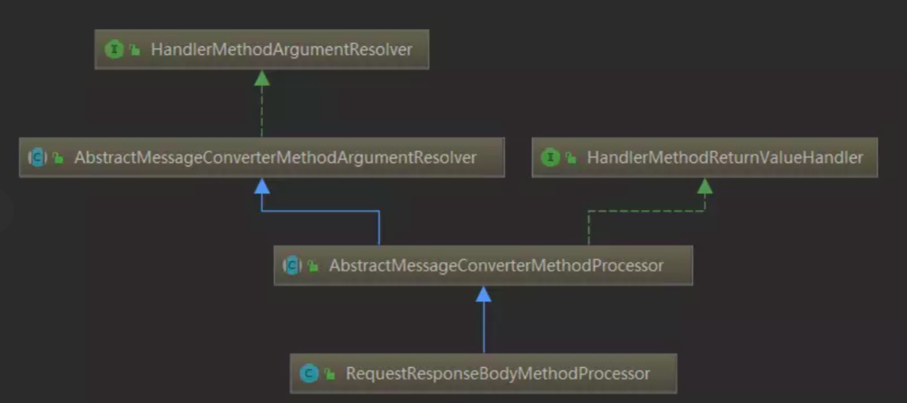

이 글의 목표
◎ 객체 검증 기술의 이해
◎ Custom Validation Annotation
◎ Validation User Group
◎ Displaying Validation Messages
◎ 프로젝트 적용 예제
검증이란?
사용자로부터 요청받은 값이 올바른 타입인지 값인지 등을 체크해주는 것을 뜻한다.
Spring 에서는 @Valid 라는 훌륭한 객체 검증 기술을 제공해준다.
Spring 에서 만든 기술은 아니지만, 서비스 계층 단이 아닌 도메인 계층 단에서 다방면으로 활용할 수 있는 기술이다.
(JSR-303 이란 이름으로 채택된 서블릿 2.3 표준스펙 중 하나라고 한다.)
@Valid
위에서 설명했듯이 @Valid 는 훌륭한 객체 검증 기술이다.
구현한 인터페이스를 살펴보니

와 같은 것을 확인할 수 있다.
1. RequestResponseBodyMethodProcessor
2. AbstractMessageConverterMethodArgumentResolver
3. DataBinder (validate)
로 이어지는데,
AbstractMessageConverterMethodArgumentResolver 의
validateIfApplicable 에서 @Valid Annotation 이 존재할 경우 DataBinder 의 validate 를 호출하여 유효성 검사를 하게 된다.
HibernateValidator 를 사용할 경우, ValidatorImpl 클래스의 validate 가 호출되는데,
BeanMetaDataManager 를 통해 해당 클래스가 Validator 에서 검사를 할 수 있는 클래스인지를 확인합니다.
사용법은 비교적 단순하다.
첫번째로 pom.xml 파일에
dependency 를 추가해준다.
<dependency>
<groupId>javax.validation</groupId>
<artifactId>validation-api</artifactId>
<version>1.0.0.GA</version>
</dependency>
Hibernate Validator 를 사용하거나 Spring 4.x 인 경우에는 아래 설정으로 대체하면 된다.
Spring 4.x 에서는 위 설정 만으로는 BindingResult 가 작동이 안되기 때문에 차라리 위 설정을 지우고 아래 설정만 해주고 있다.
<dependency>
<groupId>org.hibernate</groupId>
<artifactId>hibernate-validator</artifactId>
<version>6.0.13.Final</version>
</dependency>
두번째로 데이터 객체에 검증을 위한 어노테이션을 추가해준다.
public class FindMemberEmailDto extends MemberDto
{
@NotNull(message = "Empty.Member.user_nm")
@Size(min = 2, message = "ToShort.Member.user_nm")</b>
private String user_nm;
@NotNull(message = "Empty.Member.birth")
@Pattern(message = "WrongPattern.Member.birth", regexp = "생년월일 정규식")</b>
private String birth;
@NotNull(message="Empty.Member.phone")
@Pattern(message = "WrongPattern.Member.phone", regexp = "휴대폰 번호 정규식")</b>
private String phone;
}
기본적으로 제공해주는 Valid Annotation 을 변수 선언부 앞에 작성해주면 된다.
여기서 message 는 조건에 맞지 않았을 경우 반환시켜주는 메세지이다.
작성하지 않았을 경우에는 default message 를 반환시켜준다.
(Default Message = "입력한 값이 올바르지 않습니다.")
※ 메세지를 코드상에 직접 입력해도 무관하지만 다국어 및 관리를 위해서는 message_ko, message_en 과 같은 파일 형태로 관리하는 것이 좋다.
기존
spring context 폴더에 message-context.xml 생성해주고, contextConfigLocation 에 경로를 추가하였다.
<param-value>
/WEB-INF/spring/message-context.xml
</param-value>
(우리 서비스의 경우 *-context.xml 로 입력해두어서 별도의 설정은 불필요하였다.)
생성한 context.xml 에 다음과 같이 입력하였다.
<beans:bean id="localeResolver"
class="org.springframework.web.servlet.i18n.SessionLocaleResolver">
<beans:property name="defaultLocale" value="ko"/>
</beans:bean>
<beans:bean id="messageSource"
class="org.springframework.context.support.ReloadableResourceBundleMessageSource">
<beans:property name="basename" value="classpath:messages/validation/message"/>
<beans:property name="useCodeAsDefaultMessage" value="true" />
<!-- 파일의 기본 인코딩을 지정합니다. -->
<beans:property name="defaultEncoding" value="UTF-8"/>
<!-- properties 파일이 변경되었는지 확인하는 주기를 지정합니다. 60초 간격으로 지정했습니다. -->
<beans:property name="cacheSeconds" value="60"/>
</beans:bean>
<beans:bean id="validator"
class="org.springframework.validation.beanvalidation.LocalValidatorFactoryBean">
<beans:property name="validationMessageSource" ref="messageSource"/>
</beans:bean>
여기까지 완료하면
classpath:messages/validation/message 경로에 있는 message.properties 파일을 자동으로 UTF-8 로 변환하여 읽을 것이다.
message 파일은 사용자의 Locale 을 기준으로 자동으로 맵핑된다.
(주 언어가 영어인 미국의 경우
message_en_US.properties > message_en.properties > message.properties 순으로 message 파일를 찾는다.)
이제 이 메세지들을 실제 유저에게 Response 해주는 코드와 맵핑하여 노출시켜주자.
(Empty.Member.user_nm => 사용자 이름을 입력해주세요.)
우리 서비스에서는 따로 Apapter 나 Intercepter 로 처리하지 않고 컴포넌트로 만들어서 때에 따라서 사용하였다.
@Service
public class ValidMessage
{
private final MessageSource messageSource;
@Autowired
public ValidMessage(MessageSource messageSource)
{
this.messageSource = messageSource;
}
private String getMessage(FieldError e)
{
return messageSource.getMessage(e.getDefaultMessage(), e.getArguments(), Locale.getDefault());</b>
}
public String get(BindingResult bindingResult)
{
String message = "입력한 값이 올바르지 않습니다.";
if (DataTypeValidator.empty(bindingResult)) {
return message;
}
return getMessage(bindingResult.getAllErrors().get(0));</b>
}
}
이제 ValidMessage 를 활용하여 MessageSource (message.properties) 의 메세지를 반환시켜주면 된다.
public @ResponseBody ResponseEntity findEmailAction(@Valid @ModelAttribute FindMemberEmailDto req, BindingResult bindingResult)
{
if (!isExistsIdentify()) {
return new ResponseEntity(HttpStatus.Unauthorized);
}
if (bindingResult.hasErrors()) {
return new ResponseEntity(HttpStatus.BadRequest, validMessage.get(bindingResult));
}</b>
return findService.findEmail(req);
}
Validation User Group
※ 만약 SELECT, INSERT, UPDATE, DELETE 등의 ACTION 에 따라서 각각 다른 컬럼을 검증하고 싶다면?
(예를 들어 SELECT 는 MEM_IDX 만 필요, UPDATE 는 MEM_IDX 와 PHONE 이 필요할 경우 하나의 DTO 객체를 각각 다르게 검증)
@Validated 를 사용하면 된다.
컨트롤러 메서드 인자 부분에
@Valid 대신에 @Validated(group = 그룹.Class) 를 넣어주고,
public class FindMemberEmailDto extends MemberDto
{
@NotNull(message="Empty.Member.phone", groups = {그룹.class})
@Pattern(message = "WrongPattern.Member.phone", regexp = "휴대폰 번호 정규식", groups = {그룹.class})</b>
private String phone;
}
와 같이 활용하여 ACTION 에 따라 각각 다른 컬럼을 검증할 수 있다.
다음은 기본적으로 제공해주는 어노테이션이다.
@AssertFalse :
false 값만 통과 가능
@AssertTrue :
true 값만 통과 가능
@DecimalMax(value=) :
지정된 값 이하의 실수만 통과 가능
@DecimalMin(value=) :
지정된 값 이상의 실수만 통과 가능
@Digits(integer=,fraction=) :
대상 수가 지정된 정수와 소수 자리수보다 적을 경우 통과 가능
@Future :
대상 날짜가 현재보다 미래일 경우만 통과 가능
@Past :
대상 날짜가 현재보다 과거일 경우만 통과 가능
@Max(value) :
지정된 값보다 아래일 경우만 통과 가능
@Min(value) :
지정된 값보다 이상일 경우만 통과 가능
@NotNull :
null 값이 아닐 경우만 통과 가능
@Null :
null 값일 경우만 통과 가능
@Pattern(regex=, flag=) :
해당 정규식을 만족할 경우만 통과 가능
@Size(min=, max=) :
문자열 또는 배열이 지정된 값 사이일 경우 통과 가능
@Valid :
대상 객체의 확인 조건을 만족할 경우 통과 가능
Custom Annotaion
기본적으로 제공해주는 검증 어노테이션 외에도 추가로 필요한 경우
유저는 사용자 검증 어노테이션을 작성하여 활용할 수 있다.
간단하게
생년월일 데이터를 이용해서 성인 여부를 체크하는 사용자 검증 어노테이션을 작성해보겠다.
import javax.validation.Constraint;
import javax.validation.Payload;
import java.lang.annotation.Documented;
import java.lang.annotation.Retention;
import java.lang.annotation.Target;
import static java.lang.annotation.ElementType.FIELD;
import static java.lang.annotation.RetentionPolicy.RUNTIME;
@Target({FIELD})
@Retention(RUNTIME)
@Constraint(validatedBy = IsAdultValidator.class)
@Documented</b>
public @interface IsAdult
{
String message() default "기본 메세지";</b>
Class<?>[] groups() default {};
Class<? extends Payload>[] payload() default {};
}
import javax.validation.ConstraintValidator;
import javax.validation.ConstraintValidatorContext;
import java.util.regex.Pattern;
public class IsAdultValidator implements ConstraintValidator<IsAdult, String>
{ private static final Pattern ADULT_BIRTH_PATTERN =
Pattern.compile("(19)\\d{2}(0[1-9]|1[012])(0[1-9]|[12][0-9]|3[0-1])");
public boolean isValid(String value, ConstraintValidatorContext context)
{
return isAdult(value);</b>
}
private boolean isAdult(String value)
{
return DataTypeValidator.notEmpty(value) && ADULT_BIRTH_PATTERN.matcher(value).matches();
}</b>
}
@IsAdult(message = "NotAdult.Member.birth")</b>
private String birth;
세번째로 컨트롤러에서 인자값에 설정을 추가해준다.
@GetMapping("/auth/member/find-email-action")
public @ResponseBody ResultEntity findEmailAction(@Valid @ModelAttribute FindMemberPasswordDto args, BindingResult bindingResult)
{
ResultEntity result = new ResultEntity(args);
if (bindingResult.hasErrors()) {
return result;
}
result.setResponse(findService.findEmail(args));
return result;
}
BindingResult 인자는 검증할 객체 뒤에 선언하는 것이 좋다.
검증할 객체의 앞에 선언할 경우 에러가 발생한다.
네번째로 servlet.xml 파일에 설정을 추가해준다. (in maven)
<mvc:annotation-driven />
기본적인 설정은 완료하였다.
이제 아래 예제 코드로 요청을 해보면
/api/auth/member/find/email-action?email=krr-b@gmail.com&phone=01012345678
필수 값인 사용자 이름을 입력하지 않았기 때문에 에러가 발생하면서 다음과 같은 메세지를 반환시켜준다.
(Response 형태에 따라 다르게 노출)
{
code: 400,
status: 'Bad Request',
message: '이름은 2글자 이상 입력해주세요.',
data: []
}
에러 메세지에 대한 처리 방법은 개발 패턴, 서비스마다 다를 것이다.
우리 서비스에서의 처리 방법에 대해서는 아래 프로젝트 적용 예제에서 작성하겠다.
적용 예제